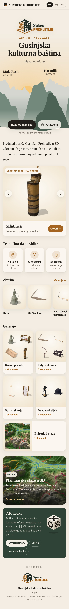

Gusinje · Crna Gora
Gusinjska
kulturna baština
Muzej na dlanu · A museum in your hand
Baština Gusinja
u 3D
Heritage of Gusinje in 3D

Okrenite ih prstom
Turn them with a finger
Na AR kocki
On the AR cube · 3D print or paper
Ibrik · Na kocki
Staze Prokletija
u 3D i AR
Prokletije hiking trails
17 × 17 km
2534 m
AR
Skenirajte i istražite
Scan and explore · Skanoni dhe eksploroni
gsgsgs84.github.io/gusinjska-bastina